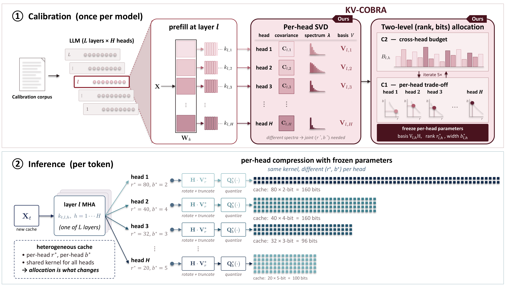
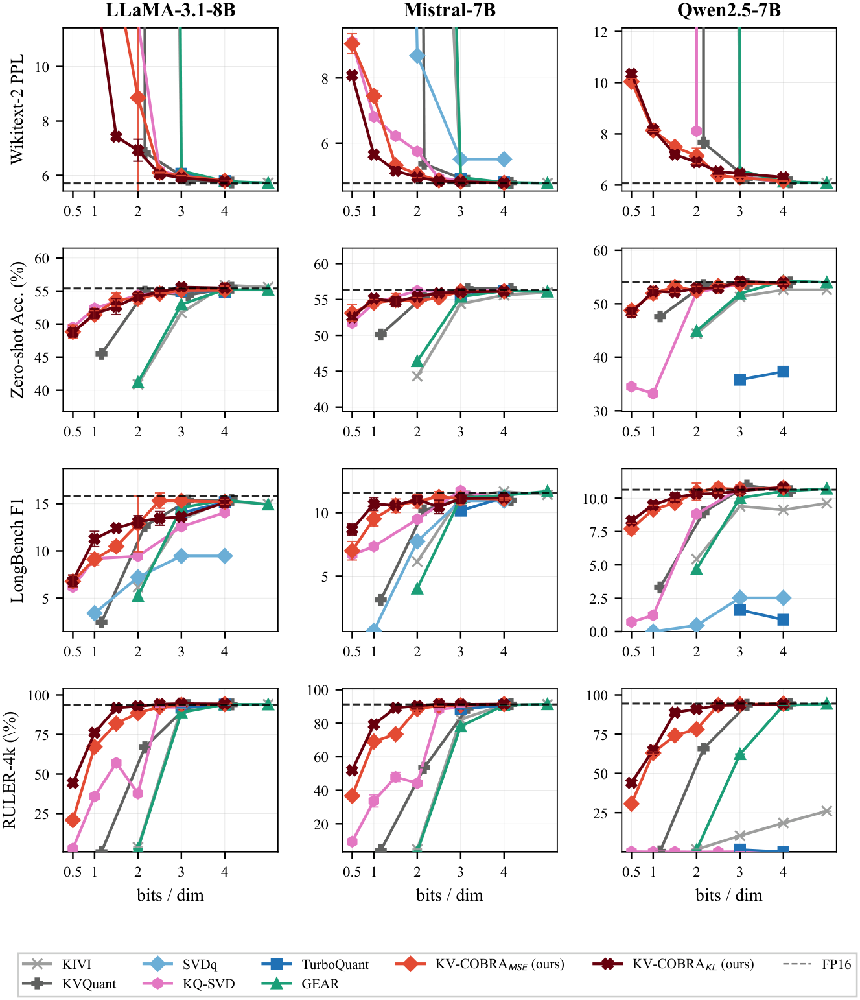
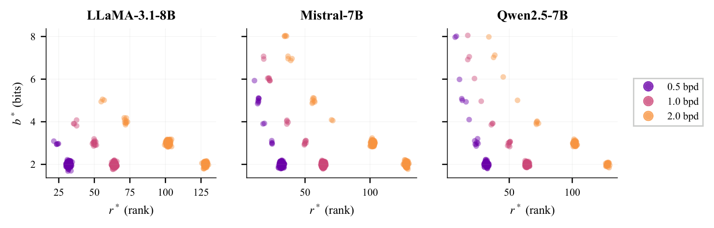

What limits KV-cache compression at extreme bit-rates? We argue that it is not the choice of compression scheme, but how its budget is allocated across attention heads. Existing methods apply rank and bit-width uniformly, ignoring that each head has a different optimal mix of rank truncation and quantization. We show that co-optimizing rank and bit-width per head—using only standard low-rank projection and scalar quantization—dominates uniform allocation, with the largest gains at low bit-rates. Our method, KV-COBRA (Co-Optimized Bit-Rank Allocation), formalizes this as a resource-allocation problem: it balances rank-truncation loss against quantization loss within each head, then redistributes budget across heads to minimize total distortion. A fused Hadamard rotation equalizes per-channel variance, and reordering the SVD basis by attention-KL importance makes the solver query-aware. The same allocator extends to joint K+V compression. On perplexity, zero-shot, and long-context benchmarks from 0.5 to 4 bits per dimension (bpd), KV-COBRA shows the smallest accuracy degradation among evaluated methods at low bpd, with no per-token overhead.
Rank r and bit-width b are usually global hyperparameters, yet heads differ widely in how their key spectrum concentrates. A single (r, b) wastes bits on concentrated heads and starves diffuse ones, and the two choices are coupled. KV-COBRA treats this as a rate-distortion allocation problem with the per-head distortion
D(r, b) = ∑i>r wi + q(b) ∑i≤r wi, q(b) = 2−2b/12

Calibration. Per-head SVD of prefill keys; a two-level C1+C2 allocator freezes the basis, rank r* and bit-width b* of every head. Inference. Each key is rotated and truncated with H·VT and quantized with its head's b*-bit quantizer. The kernel is shared by all heads; only the allocation changes.
C1, per head. For a head budget B, enumerate the even ranks r, set b ≈ B/r clipped to [2, 8], and keep the pair with the smallest D, an O(d/2) search. At the optimum, the projection loss saved by two more directions matches the quantization loss added on the retained ones.
C2, across heads. With C1 as an oracle, move budget between heads until their marginal distortions equalize, the water-filling condition of rate-distortion theory. A damped update converges in five rounds.
Hadamard rotation. A Walsh–Hadamard transform with a fixed random sign flip, folded into the projection, flattens the steeply decaying variances of the retained coordinates, so one uniform quantizer per head suffices.
Attention-KL reordering. A second-order bound on the softmax KL gives each direction the weight wi = σ2Q,iσ2K,i instead of the key eigenvalue alone. Sorting the basis by this weight before C1/C2 gives KV-COBRAKL, the main method. With wi = λi the same solver gives KV-COBRAMSE.
| LLaMA-3.1-8B | Mistral-7B-v0.3 | Qwen2.5-7B-Instruct | |||||||
|---|---|---|---|---|---|---|---|---|---|
| 1 bit / dim | FP16 | MSE | KL | FP16 | MSE | KL | FP16 | MSE | KL |
| Perplexity (↓) | 7.67 | 24.76 | 20.26 | 13.15 | 27.18 | 15.90 | 9.50 | 12.97 | 13.20 |
| Zero-shot acc. (↑) | 55.4 | 51.5 | 51.6 | 56.3 | 54.6 | 55.1 | 54.1 | 51.7 | 52.5 |
| LongBench F1 (↑) | 15.80 | 9.25 | 11.36 | 11.54 | 9.55 | 10.72 | 10.64 | 9.10 | 9.53 |
Keys compressed pre-RoPE to 1 bit per dimension, mean over 5 seeds. MSE = KV-COBRAMSE, KL = KV-COBRAKL. Perplexity averages WikiText-2, PTB and C4; zero-shot averages ARC-C, HellaSwag, PIQA, WinoGrande and MMLU; LongBench averages five QA tasks. Bold marks the better variant.

Main k-only results from 0.5 to 4 bits per dimension against KIVI, KVQuant, GEAR, TurboQuant, SVDq and KQ-SVD. Dashed lines mark FP16; error bars are ±1 SD over 5 seeds.
Above 2 bpd the allocator barely matters. Below it, the methods separate: integer-only quantizers cannot reach the regime, uniform-budget SVD baselines degrade sharply, and KV-COBRAKL degrades most gracefully, nearly doubling the LongBench F1 of the integer-only baselines at a nominal 1-bpd budget. KV-COBRAMSE wins on perplexity and KV-COBRAKL on LongBench, the split the two objectives predict. The pattern carries over to LLaMA-3.1-70B, Qwen2.5-72B and Mixtral-8x7B.

Per-head (r*, b*) selected by C1 on three models, colored by target bpd.
The optima spread over many operating points and shift with the budget and the model. This is the freedom a global hyperparameter throws away, and the reason per-head allocation pays off most at low bit rates.
| Context | r = 16, b = 2 | r = 16, b = 4 | r = 32, b = 2 | r = 64, b = 2 |
|---|---|---|---|---|
| 32k | 1.83× | 1.84× | 1.77× | 1.40× |
| 64k | 1.79× | 1.85× | 1.82× | 1.48× |
| 128k | 1.89× | 1.88× | 1.85× | 1.49× |
Per-layer attention primitive vs. FP16 SDPA (Hq = 32, d = 128, CUDA graphs, RTX 6000 Ada).
The cache is stored as packed b-bit codes with the rotation folded into the basis, so dequantization and the inverse rotation run in one fused pass. All allocation work happens once: the C1+C2 solve takes under 200 ms on 7–8B models, and the full calibration of LLaMA-3.1-70B takes 18.3 s.
@article{ha2026kvcobra,
title = {KV-COBRA: KV Cache Compression via Co-Optimized Bit-Rank Allocation},
author = {Ha, Sihyeon and Lee, Jaeho and Jeon, Yo-Seb},
journal = {arXiv preprint arXiv:2609.24298},
year = {2026}
}